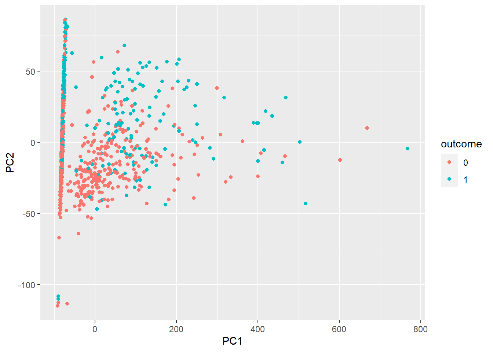
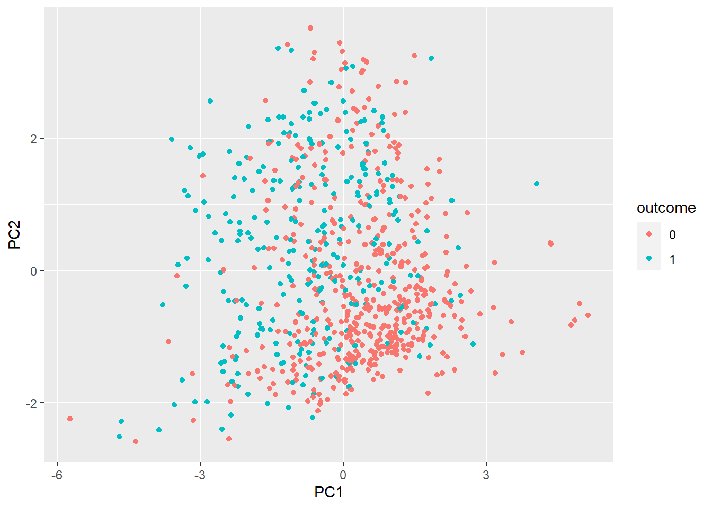
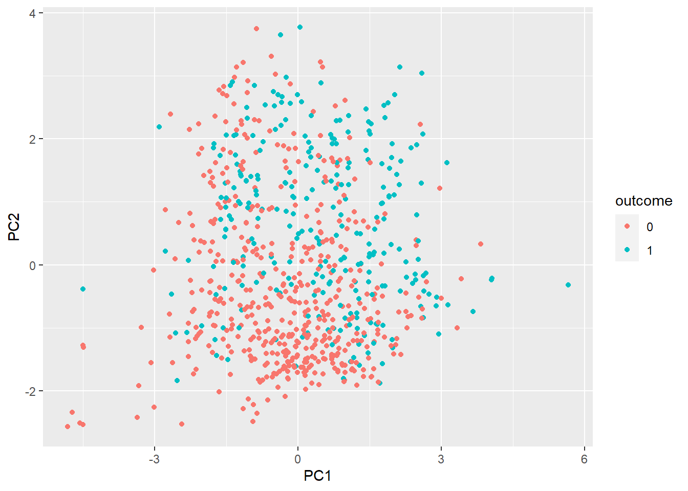
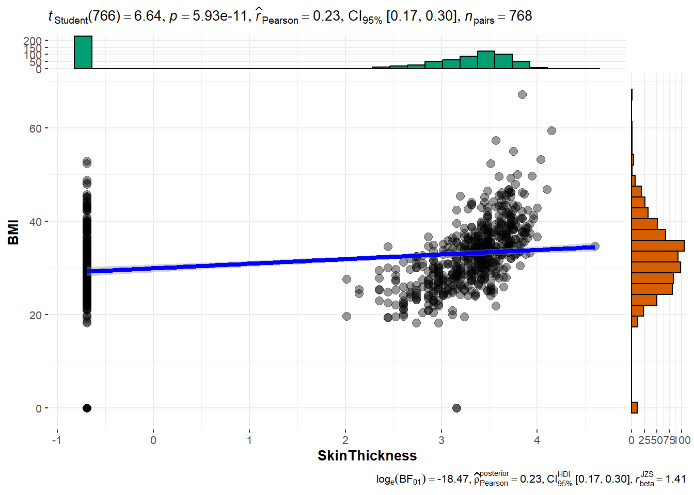

Katherine Criollo, Christian Guanoquiza, Esteban Narea
Intro
Este sería un ejemplo de examen El siguiente conjunto de datos, consuste en predecir a pacientes basandonos en datos clínicos, si puede padecer diabetes o no.
Antes de cualquier método de clasificación, regresión o lo que sea, necesitamos explorar los datos.
Esto supone exámenes estadísticos inferenciales univariantes, bivariantes y multivariantes.
Pima Indians Diabetes Database
This dataset is originally from the National Institute of Diabetes and Digestive and Kidney Diseases. The objective of the dataset is to diagnostically predict whether or not a patient has diabetes, based on certain diagnostic measurements included in the dataset. Several constraints were placed on the selection of these instances from a larger database. In particular, all patients here are females at least 21 years old of Pima Indian heritage.
Cargamos librerias
library(ggplot2)library(dplyr)
Attaching package: 'dplyr'
The following objects are masked from 'package:stats':
filter, lag
The following objects are masked from 'package:base':
intersect, setdiff, setequal, union
library(caret)
Loading required package: lattice
library(e1071)library(ggstatsplot)
You can cite this package as:
Patil, I. (2021). Visualizations with statistical details: The 'ggstatsplot' approach.
Journal of Open Source Software, 6(61), 3167, doi:10.21105/joss.03167
Cargamos los datos
datos <-read.csv("./datos/diabetes.csv")#en esta sección s ecargan los datos del archivo CVS y se almacena en la variable llamada datos. head(datos)#Este comando sirve para mostrar la primera fila de la columna de datos cargados con el objetivo de tener una vista previa rápida de los datos para verificar su estructura y contenido.
Si echamos una búsqueda rápida en google, observamos que el pedigree, es eso, la historia familiar de diabetes. Por lo tanto, aquí podríamso hacer varias cosas ! Entre ellas, regresar los datos a dicha función, o clasificar según esta variable, considerarla o no considerarla.
Para empezar vamos a considerarla para ver la clasificación del modelo knn y bayes.
Miramos las clases de los datos
str(datos)#proporciona información sobre la estructura del objeto, mostrando el tipo de datos de cada columna, la cantidad de elementos en cada columna.
La única variable que debemos de cambiar es Outcome a factor. Donde 1 es diebetes, y 0 es no diabetes
datos$Outcome <-as.factor(datos$Outcome)# se llama a la columna OUTCOME la cual está contenida en la variable datos y luego con la función as.factor se convierte a la columna en un factor y por último se reemplaza a la columna original con una columna convertida en factor.
Análisis estadístico preliminar
dim(datos)#la función "dim! tiene el objetivo de devolver un vector con dos elementos, el primero hace referencia a un número de filas y el segundo al número de columnas del objeto.
[1] 768 9
Tenemos 768 filas y 9 columnas. Analicemos primero dos a dos las variables una por una
Histogramas
l.plots <-vector("list",length =ncol(datos)-1)#se crea el vector con el nombre L.plots el cual es un vector con una longitud de datos igual al númeor de columnas -1. n1 <-ncol(datos) -1for(j in1:n1){ h <-hist(datos[,j],plot = F) datos.tmp <-data.frame(value=datos[,j],outcome=datos$Outcome) p1 <-ggplot(datos.tmp,aes(value,fill=outcome))+geom_histogram(breaks=h$breaks) +ggtitle(paste("Histogram of", colnames(datos)[j])) l.plots[[j]] <- p1}#es un vector con una longitud de datos igual al númeor de columnas menos unos, es decir asigna el valor de los datos en la variable n1, #El bucle for revisa los datos y los recorre de j desde 1 hasta la cantidad máxima de n1.
Mostrar los histogramas.
l.plots #Muestra los histogramas para cada variable, son 8 en total
[[1]]
[[2]]
[[3]]
[[4]]
[[5]]
[[6]]
[[7]]
[[8]]
En lo particular la variable del pedigree se me hace importante, entonces vamos a realizar gráficos de dispersión
En realidad, una buena práctica es correlacionar todas contra todas…
Gráfico de dispersión
Este gráfico sirve para mostrar los valores de dos variables para el conjunto de datos.
ggscatterstats(datos,BMI,DiabetesPedigreeFunction)# Esta rfunción nos genera un gráfico de disperción de la variable datos, donde el eje X representa BMI y en el eje X se representa DiabetesPedigreeFunction.
Registered S3 method overwritten by 'ggside':
method from
+.gg ggplot2
`stat_bin()` using `bins = 30`. Pick better value with `binwidth`.
`stat_bin()` using `bins = 30`. Pick better value with `binwidth`.
Sin embargo, esto puede ser un proceso tedioso… imaginad hacer 16 gráficas ! podemos condersarlo todo
Simplificación:
Matriz de correlación.
obj.cor <- psych::corr.test(datos[,1:n1])# se utiliza un teste de correlación con el finde calcular las correlaciones entre la columna de datos desde 1 hasta n1. p.values <- obj.cor$p# Se estraen los valores del objeto "obj.cor" los cuales representan la significancia estadística de las correlaciones calculadas. p.values[upper.tri(p.values)] <- obj.cor$p.adj #se crea una matriz booleana que selecciona la mitad superior de la matriz de valores p. p.values[lower.tri(p.values)] <- obj.cor$p.adj# se realiza un proceso similar al anterior pero para los valores p en la mitad inferior de la matriz. diag(p.values) <-1# se establece en 1 la diagonal principal de la matriz con los valores p, corrplot::corrplot(corr = obj.cor$r,p.mat = p.values,sig.level =0.05,insig ="label_sig") # visualización de la matriz de correlaciones
La matriz de correlación muestra los valores de correlación, que miden el grado de relación lineal entre cada par de variables. Los valores de correlación se pueden ubicar entre -1 y +1. Si las dos variables tienden a aumentar o disminuir al mismo tiempo, el valor de correlación es positivo.
Ahora podemos proceder a hacer algo similar, con una serie de comparaciones dos a dos sobre las medias o medianas, sobre cada variable y la variable de interés.
Primero debemos aplicar una regresión linear con variable dependiente cada variable numérica y por la categórica. Es decir un t.test pero con el fin de ver los residuos, para ver la normalidad de éstos
Prueba de normalidad de Shapiro- Wilk
p.norm <-apply(apply(datos[,1:n1],# se ajusta un modelo de regresión lineal para cada columna de datos para el caso de que X es la varible predictoria y datos$Outcome es la variable de respuesta.2,function(x) summary(lm(x~datos$Outcome))$residuals),2, shapiro.test)p.norm
$Pregnancies
Shapiro-Wilk normality test
data: newX[, i]
W = 0.9389, p-value < 2.2e-16
$Glucose
Shapiro-Wilk normality test
data: newX[, i]
W = 0.97511, p-value = 3.726e-10
$BloodPressure
Shapiro-Wilk normality test
data: newX[, i]
W = 0.81468, p-value < 2.2e-16
$SkinThickness
Shapiro-Wilk normality test
data: newX[, i]
W = 0.92004, p-value < 2.2e-16
$Insulin
Shapiro-Wilk normality test
data: newX[, i]
W = 0.77776, p-value < 2.2e-16
$BMI
Shapiro-Wilk normality test
data: newX[, i]
W = 0.94359, p-value < 2.2e-16
$DiabetesPedigreeFunction
Shapiro-Wilk normality test
data: newX[, i]
W = 0.84939, p-value < 2.2e-16
$Age
Shapiro-Wilk normality test
data: newX[, i]
W = 0.88114, p-value < 2.2e-16
#Se aplica la prueba de normalidad de Shapiro- Wilk a los residuos de cada varible. #Todos los resultados se documentan en la variable: p.norm
Todas las variables son no normales, tal como vemos en los histogramas.
type = “nonparametric” = Indica que se debe utilizar un enfoque no paramétrico para el análisis.
ggbetweenstats(datos,Outcome,Pregnancies,type ="nonparametric") #realiza un análisis de diferencias entre grupos en la variable categórica Outcome y la variable numérica Pregnancies
ggbetweenstats(datos,Outcome,Glucose,type ="nonparametric") # #realiza un análisis de diferencias entre grupos en la variable categórica Outcome y la variable numérica Glucose
ggbetweenstats(datos,Outcome,BloodPressure,type ="nonparametric")# #realiza un análisis de diferencias entre grupos en la variable categórica Outcome y la variable numérica BloodPressure
ggbetweenstats(datos,Outcome,Insulin,type ="nonparametric")# #realiza un análisis de diferencias entre grupos en la variable categórica Outcome y la variable numérica Insulin
ggbetweenstats(datos,Outcome,BMI,type ="nonparametric")# #realiza un análisis de diferencias entre grupos en la variable categórica Outcome y la variable numérica BMI
ggbetweenstats(datos,Outcome,DiabetesPedigreeFunction,type ="nonparametric")# #realiza un análisis de diferencias entre grupos en la variable categórica Outcome y la variable numérica DiabetesPedigreeFunction
ggbetweenstats(datos,Outcome,Age,type ="nonparametric")# #realiza un análisis de diferencias entre grupos en la variable categórica Outcome y la variable numérica Outcome
PCA
Análisis de componentes principales sirve para reducir el número de variables de forma que pasemos a tener el mínimo número de nuevas variables y que representen a todas las antiguas variables de la forma más representativa posible.
El objetivo es crear un gráfico de dispersión de los componentes principales para los valores PC1 y PC2 utilizando la función ggplot.
summary(datos)#resumen estadístico de los datos
Pregnancies Glucose BloodPressure SkinThickness
Min. : 0.000 Min. : 0.0 Min. : 0.00 Min. : 0.00
1st Qu.: 1.000 1st Qu.: 99.0 1st Qu.: 62.00 1st Qu.: 0.00
Median : 3.000 Median :117.0 Median : 72.00 Median :23.00
Mean : 3.845 Mean :120.9 Mean : 69.11 Mean :20.54
3rd Qu.: 6.000 3rd Qu.:140.2 3rd Qu.: 80.00 3rd Qu.:32.00
Max. :17.000 Max. :199.0 Max. :122.00 Max. :99.00
Insulin BMI DiabetesPedigreeFunction Age
Min. : 0.0 Min. : 0.00 Min. :0.0780 Min. :21.00
1st Qu.: 0.0 1st Qu.:27.30 1st Qu.:0.2437 1st Qu.:24.00
Median : 30.5 Median :32.00 Median :0.3725 Median :29.00
Mean : 79.8 Mean :31.99 Mean :0.4719 Mean :33.24
3rd Qu.:127.2 3rd Qu.:36.60 3rd Qu.:0.6262 3rd Qu.:41.00
Max. :846.0 Max. :67.10 Max. :2.4200 Max. :81.00
Outcome
0:500
1:268
pcx <-prcomp(datos[,1:n1],scale. = F) ## escalamos por la variablidad de los datos#se realiza un análisis de componentes principalesplotpca <-bind_cols(pcx$x,outcome=datos$Outcome)#combinación de las variables categóricas con los datos ggplot(plotpca,aes(PC1,PC2,color=outcome))+geom_point()# gráfico de dispersión de los componentes principales

Ahora vamos a ver si haciendo unas transformaciones esto cambia. Pero antes debemos de ver las variables sospechosas…
Pero de igual manera podemos escalar a ver si hay algun cambio…
gráfico de dispersión
summary(datos)#resumen estadístico de los datos
Pregnancies Glucose BloodPressure SkinThickness
Min. : 0.000 Min. : 0.0 Min. : 0.00 Min. : 0.00
1st Qu.: 1.000 1st Qu.: 99.0 1st Qu.: 62.00 1st Qu.: 0.00
Median : 3.000 Median :117.0 Median : 72.00 Median :23.00
Mean : 3.845 Mean :120.9 Mean : 69.11 Mean :20.54
3rd Qu.: 6.000 3rd Qu.:140.2 3rd Qu.: 80.00 3rd Qu.:32.00
Max. :17.000 Max. :199.0 Max. :122.00 Max. :99.00
Insulin BMI DiabetesPedigreeFunction Age
Min. : 0.0 Min. : 0.00 Min. :0.0780 Min. :21.00
1st Qu.: 0.0 1st Qu.:27.30 1st Qu.:0.2437 1st Qu.:24.00
Median : 30.5 Median :32.00 Median :0.3725 Median :29.00
Mean : 79.8 Mean :31.99 Mean :0.4719 Mean :33.24
3rd Qu.:127.2 3rd Qu.:36.60 3rd Qu.:0.6262 3rd Qu.:41.00
Max. :846.0 Max. :67.10 Max. :2.4200 Max. :81.00
Outcome
0:500
1:268
pcx <-prcomp(datos[,1:n1],scale. = T) ## escalamos por la variablidad de los datos# análisis de componente principales.plotpca <-bind_cols(pcx$x,outcome=datos$Outcome)ggplot(plotpca,aes(PC1,PC2,color=outcome))+geom_point()# se utiliza la librería ggplot2 para crear un gráfico de dispersión de las dos primeras componentes principales (PC1 y PC2)del análisis de PCA.

Contribuciones de las variables originales.
factoextra::fviz_contrib(pcx,"var")# aquí se visualiza las contribuciones de las variables originales
Al parecer es la insulina la que está dando problemas
Se realiza un análisis de componentes principales excluyendo a los datos de insulina.
## indices a quitarw <-c(grep("insulin",ignore.case = T,colnames(datos)),ncol(datos))# se crea el vector W en la cual se tiene los índices de las columas de insulina de los datos.pcx <-prcomp(datos[,-w],scale. = F) ## escalamos por la variablidad de los datos# nuevo análisis de componente principales, peroe sta vez se exluye a los datos de insulina. plotpca <-bind_cols(pcx$x,outcome=datos$Outcome)ggplot(plotpca,aes(PC1,PC2,color=outcome))+geom_point()
De hecho la insulina, tenía un aspecto raro, como sesgado, ver gráficos de arriba. Vamos a transformala…
Se aplica la transformada logarítmica a la variable a Insulina.
La transformación logarítmica es útil para transformar distribuciones con sesgo positivo (con cola más larga hacia la derecha): la parte izquierda se expandirá, mientras que la derecha se comprimirá, favoreciendo que la curva resultante se ajuste mejor a una normal.
datos$Insulin <-log(datos$Insulin+0.05)# se suma 0.05 antes de aplicar el logaritmo con el fin de evitar tomar valoires cercanos o iguales a 0. summary(datos)# nuevamente un resumen de los datos.
Pregnancies Glucose BloodPressure SkinThickness
Min. : 0.000 Min. : 0.0 Min. : 0.00 Min. : 0.00
1st Qu.: 1.000 1st Qu.: 99.0 1st Qu.: 62.00 1st Qu.: 0.00
Median : 3.000 Median :117.0 Median : 72.00 Median :23.00
Mean : 3.845 Mean :120.9 Mean : 69.11 Mean :20.54
3rd Qu.: 6.000 3rd Qu.:140.2 3rd Qu.: 80.00 3rd Qu.:32.00
Max. :17.000 Max. :199.0 Max. :122.00 Max. :99.00
Insulin BMI DiabetesPedigreeFunction Age
Min. :-2.996 Min. : 0.00 Min. :0.0780 Min. :21.00
1st Qu.:-2.996 1st Qu.:27.30 1st Qu.:0.2437 1st Qu.:24.00
Median : 3.418 Median :32.00 Median :0.3725 Median :29.00
Mean : 1.008 Mean :31.99 Mean :0.4719 Mean :33.24
3rd Qu.: 4.847 3rd Qu.:36.60 3rd Qu.:0.6262 3rd Qu.:41.00
Max. : 6.741 Max. :67.10 Max. :2.4200 Max. :81.00
Outcome
0:500
1:268
pcx <-prcomp(datos[,1:n1],scale. = T) ## escalamos por la variablidad de los datos# Nuevo análisis se componentes principales. plotpca <-bind_cols(pcx$x,outcome=datos$Outcome)#Se combinan las columnas de los resultados de PCA. ggplot(plotpca,aes(PC1,PC2,color=outcome))+geom_point()#nuevamente un gráfico de dispersión de componentes como el anterior pero aqui se transforman los datos de insulina.

Cambia ! Esto significa que no hemos quitado la infromacion de la insulina, solamente lo hemos transformado
Es decir, cambia si transformamos los datos…a partir de esto, podemos realizar de nuevo pruebas de diferencia de medianas, pero ahora lo veremos condensado..
datos <-read.csv("./datos/diabetes.csv")# se cargan los datos. datos$Outcome <-as.factor(datos$Outcome)#conversión de la columna Outcome de datos en un factor.datsc <-scale(datos[,-ncol(datos)])# se estandarízan los datos numéricos y se exluye la columna -ncol(datos) ya que esta columna se convirtió en un factor. Y se guarda en la variable datsc.
Veamos las distribuciones de nuevo….
Nuevos histogramas después de la tranformación de Insulina
l.plots <-vector("list",length =ncol(datos)-1)# lista vacía con una longitud igual al número de columnas en datos menos 1. n1 <-ncol(datos) -1# for(j in1:n1){ h <-hist(datos[,j],plot = F) datos.tmp <-data.frame(value=datos[,j],outcome=datos$Outcome) p1 <-ggplot(datos.tmp,aes(value,fill=outcome))+geom_histogram(breaks=h$breaks) +ggtitle(paste("Histogram of", colnames(datos)[j]))#Se crea el gráfico del histograma y se especifícan los intervalos del histograma. l.plots[[j]] <- p1# guarda el gráfico de histograma generado en la posición j de la lista l.plots.}l.plots# esta lista contiene una serie de gráficos de histogramas generados para las columnas numéricas datos.
[[1]]
[[2]]
[[3]]
[[4]]
[[5]]
[[6]]
[[7]]
[[8]]
Curioso, los valores la insulina, han cambiado por la transformación en valor mas no la distribución, vamos a hacer unos arrelgos…
Al parecer la preñanza esta ligada a una esgala logaritmica de 2 Esto es otra cosa…
Histograma para la variable “Pregnacies”
datos <-read.csv("./datos/diabetes.csv")#Cargamos los datosdatos$Outcome <-as.factor(datos$Outcome)# se convierten los datos outcome a un factor.datos$Pregnancies <-log(datos$Pregnancies+0.5)#Se aplica la tranformación logarítmica para pregnacies sumando el 0.5 antes de aplicar el logaritmo. ggplot(datos,aes(Pregnancies))+geom_histogram(breaks =hist(datos$Pregnancies,plot=F)$breaks)#Creación del histograma de la variable pregnacies
Realizaremos lo mismo con la grosura de la piel
datos <-read.csv("./datos/diabetes.csv")#Cargamos los datosdatos$Outcome <-as.factor(datos$Outcome)# se convierten los datos outcome a un factor.datos$SkinThickness <-log(datos$SkinThickness+0.5)#Se aplica la tranformación logarítmica para SkinThickness sumando el 0.5 antes de aplicar el logaritmo. ggplot(datos,aes(SkinThickness))+geom_histogram(breaks =hist(datos$SkinThickness,plot=F)$breaks)#Creación del histograma de la variable SkinThickness.
Tenemos algo raro, lo más posible sea por la obesidad…
Gráfico de dispersión y prueba estadísticas adecuadas.
Para los valriables: “SkinThickness” y “BMI”.
ggscatterstats(datos,SkinThickness,BMI)# esta sección realiza una comparación estadística entre las variables "SkinThickness" y "BMI".
`stat_bin()` using `bins = 30`. Pick better value with `binwidth`.
`stat_bin()` using `bins = 30`. Pick better value with `binwidth`.

Curioso ! al parecer los datos tienen valores nulos, los cuales solo están en las otras variables que no sean pregnancies. Vamos a quitarlos…
datos <-read.csv("./datos/diabetes.csv")# se cargan los datos.datos[,-c(1,9)] <-apply(datos[,-c(1,9)],2,function(x) ifelse(x==0,NA,x))# se reemplazan las columnas de cero en todas las columnas de datos a esepción de la primera y la novena columna. datos$Outcome <-as.factor(datos$Outcome)# Se convierte la columna outcome a un factor con las modificaciones anteriores.
vamos a quitar estos valores
datos <- datos[complete.cases(datos),]# se eliminan todas las filas en datos. Solo se conservan las filas completas sin valores faltantes.
Se redujo el data set a 392 observaciones…
table(datos$Outcome) #Esta línea muestra una tabla de frecuencias de la variable "Outcome" en datos, lo que proporciona un recuento de los diferentes niveles o categorías presentes en esa columna.
0 1
262 130
l.plots <-vector("list",length =ncol(datos)-1)#se crea una lista llamada l.plots con longitud igual al número de columnas en datos menos 1n1 <-ncol(datos) -1for(j in1:n1){#itera sobre cada columna de datos (excepto la columna "Outcome") y realiza las siguientes operaciones h <-hist(datos[,j],plot = F)#calcula el histograma de la columna j datos.tmp <-data.frame(value=datos[,j],outcome=datos$Outcome)# crea un nuevo marco de datos datos.tmp que contiene los valores de la columna j de datos. p1 <-ggplot(datos.tmp,aes(value,fill=outcome))+geom_histogram(breaks=h$breaks) +ggtitle(paste("Histogram of", colnames(datos)[j]))#Esta línea utiliza la función ggplot() del paquete ggplot2 para crear un gráfico de histograma. El eje x se establece como value (los valores de la columna j), y el relleno del histograma se basa en la columna "Outcome" l.plots[[j]] <- p1}l.plots# se muestran los histogramas
Con las anteriores transformaciones vamos a realizar el PCA de nuevo.
summary(datos)
Pregnancies Glucose BloodPressure SkinThickness
Min. :-0.6931 Min. :4.025 Min. : 24.00 Min. :2.646
1st Qu.: 0.4055 1st Qu.:4.595 1st Qu.: 62.00 1st Qu.:4.583
Median : 0.9163 Median :4.779 Median : 70.00 Median :5.385
Mean : 0.9590 Mean :4.778 Mean : 70.66 Mean :5.305
3rd Qu.: 1.7047 3rd Qu.:4.963 3rd Qu.: 78.00 3rd Qu.:6.083
Max. : 2.8622 Max. :5.288 Max. :110.00 Max. :7.937
Insulin BMI DiabetesPedigreeFunction Age
Min. :2.639 Min. :18.20 Min. :-2.4651 Min. :4.392
1st Qu.:4.341 1st Qu.:28.40 1st Qu.:-1.3103 1st Qu.:4.524
Median :4.832 Median :33.20 Median :-0.7996 Median :4.755
Mean :4.813 Mean :33.09 Mean :-0.8391 Mean :4.882
3rd Qu.:5.247 3rd Qu.:37.10 3rd Qu.:-0.3754 3rd Qu.:5.170
Max. :6.741 Max. :67.10 Max. : 0.8838 Max. :6.340
Outcome
0:262
1:130
pcx <-prcomp(datos[,1:n1],scale. = T) ## escalamos por la variablidad de los datosplotpca <-bind_cols(pcx$x,outcome=datos$Outcome)ggplot(plotpca,aes(PC1,PC2,color=outcome))+geom_point()
knnPredict <-predict(knnFit,newdata = dat.test[,-ncol(dat.test)] )#Get the confusion matrix to see accuracy value and other parameter valuesconfusionMatrix(knnPredict, dat.test$Outcome )
Confusion Matrix and Statistics
Reference
Prediction D N
D 73 21
N 6 18
Accuracy : 0.7712
95% CI : (0.6848, 0.8435)
No Information Rate : 0.6695
P-Value [Acc > NIR] : 0.010532
Kappa : 0.4272
Mcnemar's Test P-Value : 0.007054
Sensitivity : 0.9241
Specificity : 0.4615
Pos Pred Value : 0.7766
Neg Pred Value : 0.7500
Prevalence : 0.6695
Detection Rate : 0.6186
Detection Prevalence : 0.7966
Balanced Accuracy : 0.6928
'Positive' Class : D
library(caret)datos <-read.csv("./datos/diabetes.csv")datos$Outcome <-as.factor(datos$Outcome)datos[,1:n1] <-as.data.frame(scale(datos[,-ncol(datos)]))levels(datos$Outcome) <-c("D","N")train <-sample(nrow(datos),size =nrow(datos)*0.7)dat.train <- datos[train,]dat.test <- datos[-train,]set.seed(1001) ctrl<-trainControl(method="repeatedcv",number=10,classProbs =TRUE,summaryFunction = twoClassSummary) plsda<-train(x=dat.train[,-ncol(datos)], # spectral datay=dat.train$Outcome, # factor vectormethod="pls", # pls-da algorithmtuneLength=10, # number of componentstrControl=ctrl, # ctrl contained cross-validation optionpreProc=c("center","scale"), # the data are centered and scaledmetric="ROC") # metric is ROC for 2 classesplsda
Partial Least Squares
537 samples
8 predictor
2 classes: 'D', 'N'
Pre-processing: centered (8), scaled (8)
Resampling: Cross-Validated (10 fold, repeated 1 times)
Summary of sample sizes: 483, 484, 483, 483, 483, 483, ...
Resampling results across tuning parameters:
ncomp ROC Sens Spec
1 0.8183485 0.8468067 0.5657895
2 0.8348713 0.8667227 0.6181579
3 0.8346068 0.8814286 0.6023684
4 0.8342848 0.8756303 0.6076316
5 0.8338425 0.8784874 0.6023684
6 0.8336922 0.8784874 0.6023684
7 0.8336922 0.8784874 0.6023684
ROC was used to select the optimal model using the largest value.
The final value used for the model was ncomp = 2.
Permutation test for adonis under reduced model
Terms added sequentially (first to last)
Permutation: free
Number of permutations: 999
adonis2(formula = datos[, -ncol(datos)] ~ datos$Outcome, method = "euclidean")
Df SumOfSqs R2 F Pr(>F)
datos$Outcome 1 357.8 0.05831 47.434 0.001 ***
Residual 766 5778.2 0.94169
Total 767 6136.0 1.00000
---
Signif. codes: 0 '***' 0.001 '**' 0.01 '*' 0.05 '.' 0.1 ' ' 1
Es decir, como conlusión aunque las variables no pueden detectar la diabetes, siendo variables independientes, si por otro lado las consideramos dependientes de la diabetes.
Es decir, la diabetes es una condición en la que influye en los parámetros, mientras que es menos probable que la diabetes sea la causa de estas alteraciones, con una mejor precisón del 77 por ciento.
Es decir, por un lado tenemos las variables que nos explican solo un 77 porciento de la diabetes, mientras que la condición en sí nos separa más entre la media global.
Se podría investigar más esto. Por ejemplo, se podría hacer una correlación parcial, dada la diabetes, e identificar aquellas variables especificamente relacionadas con esta.